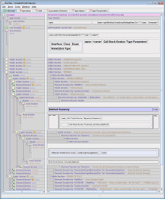
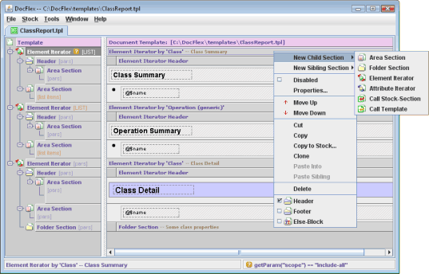
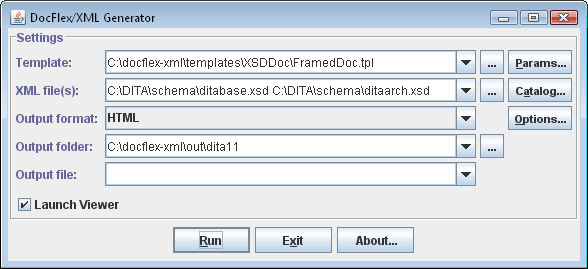
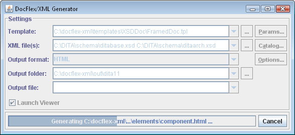

About DocFlex Technology
- Introduction
- What are Templates?
- Data Sources
- How Data Processed
- Output Generation
- Core Components
- Applications
1. Introduction
DocFlex is a technology for rapid development of template-based documentation/report
generators built into Java applications.
It is based on an idea that most of the data, which a typical application operates, have a tree or network
structure and generally can be represented in a form similar to Document Object Model
(DOM) of XML files.
(In fact, that's why XML is widely used to export/import those data and exchange between applications.)
Following that idea, it is possible to imagine that if we had some abstract interface that
can represent most of practically used data sources in some universal form similar to
DOM,
we could process such data using a single tool, which is based only on the concepts of XML
(possibly with a few enhancements) and employs some standards and approaches developed around it.
DocFlex technology was devised as an implementation of that idea for the task of
representing the application data in some human-readable form, i.e. generating various
reports and documentation.
Another idea related to that task and sought to achieve in DocFlex Technology is a
universal approach for specifying formatting of the output documents and generating a common
network of hyperlinks interconnecting them.
The natural way to achieve all those goals would be to introduce a new programming medium
in the form of a scripting language or
template language.
Scripts versus Templates
A scripting language is typically something intended for manual coding, compiling and running
with an interpreter. Normally, this approach provides powerful expressive capabilities, however
in expense of a rather cumbersome (and laborious) way of using them.
For instance:
-
Most of program semantics comes down to lots of identifiers (e.g. the names of functions, variables,
parameters, labels etc.) and relations between them.
You need to properly declare/define all of them and track across one or many scripts, keeping in mind both their meaning and
how they are connected to each other.
-
The processing instructions (or structures) associated with those identifiers must follow some complex syntax,
which may be cumbersome to write down, however easy to spoil, thereby introducing a bug.
-
The highly expressive capabilities of some operators and language constructs mean that you can widely change their semantics with
just a few settings or properties. That, however, is also an easy way for bugs.
-
Scripts are plain texts. Typically, without a special documentation, it is hard to understand what they actually do.
This makes difficult further modifications, particularly by non-authors of those scripts.
-
A scripting language is hard to extend with new features and functionality because you need to maintain the backward compatibility
and consistency of huge a lot of things.
In addition, in the case of XML, such a scripting language already exists.
It is XSLT,
which is an elaborated programming language (the third generation now).
XSLT probably represents almost all what could be achieved in that way.
Yet, it has lots of limitations.
As templates we call some structures intended for editing only with some software: a graphic Template Designer.
It is also a sort of language, however expressed in the form of visual controls and components displayed in the designer GUI.
Now, instead of keywords and operators, you work with some interactive things that show up on the screen and represent most of
the processing semantics. Like scripts, templates are programs, which must be stored in some files and interpreted by a Template Processor.
This approach has the following advantages:
-
The processing structures represented by template components may be displayed in a way that visually expresses what a component does
(for instance, it may resemble the output it generates).
That representation may be both expressive and compact (after all, it is not just a text),
which allows you easily to navigate a template, understand what it does and modify anything you need.
-
As template components are visual and interactive, they may have very complex internal structure, for instance, contain lots
of properties and nested components. At that, you don't need to scroll and navigate some kind of enormous text, which encodes
all of this (as it would be in case of a script). Rather, you just need to invoke some property dialogs
and expand/collapse some component sections.
-
A template component may be easily copied, pasted and deleted as a whole.
At that, you don't need to bother that the template syntax is restored after that.
The template designer will also ensure that each component is created, copied or moved only in the allowed place.
-
The highly structured nature of templates eliminates the need for most of various named identifiers.
Many connections between different template components will be also maintained by the Template Designer (i.e. modified automatically
when necessary).
-
As template files are stored and read only programmatically, there is no need to know and understand their syntax.
There will be no syntax errors either.
-
The actual template syntax may be optimized not for human programmers, but for faster loading and processing of templates
by the Template Processor. There is no need in a compilation phase.
-
The separation of template semantics from the particular structure of template files helps for faster and easier evolution
of the template language. The obsolete constructs of older template versions can be automatically converted into new structures.
Both old and new templates will look and work up-to-date.
The template approach was chosen as a base for DocFlex Technology. Actually, DocFlex templates
represent a mixture of both approaches, since small scripts called
FlexQuery expressions
can be used to adjust dynamically some properties of more rigid (but visually expressible)
template components.
2. What are Templates?
DocFlex templates are programs.
The idea behind the templates is the following.
If you consider how almost any Java library that generates something
(and not only generates -- for instance, powers a GUI system) works,
you will notice that, basically, it may be described as follows:
-
First, we need to create a certain object representation of some controlling structure
(using special classes and methods of that library).
-
Further, we call an interpreter included in that library and pass to it that controlling structure
along with some data source we want to process, e.g. some data file, some interface or whatsoever.
Actually, such an interpreter may be started just by calling some member method of the root object
representing that controlling structure. For instance, in case of a GUI system, this
may be as simple as dlg.show().
|
-
Finally, the interpreter processes that controlling structure and produces from
the data source some useful output (or shows a GUI).
What the actual programming is all about here, when using such a system, is the first step.
We need to encode the creation of that controlling structure!
Now, let's imagine that such a controlling structure is serialized to a file
(and, therefore, can be created from it).
What is that file, then? One may call it a “template”!
But if that is a template, why not to create and edit it using some template designer GUI?
That approach has a number of advantages:
-
A designer GUI can visualize everything.
Now, rather than coding abstract method calls, we can visually construct the controlling structure
using the notions of things we expect to see in the generated output.
-
Since probably every modern document format in its core is based on the same obvious concepts
like flows of text with specified fonts and colors, paragraphs with specified margins, borders and
other properties, tables, bulleted/numbered lists, images and so on, most of such things can
be defined in some universal format-independent way, which can be encoded in the form of
template components.
-
Such template components can be visualized in the template designer GUI. This allows easy
manipulation with them (creating/defining, modifying, moving, coping and so on).
Doing the same by calling various Java methods and modifying Java code each time we need
to change something would be a lot more cumbersome!
-
On other hand, the template interpreter will render those template components
with the suitable features of the particular destination output format (such as HTML or RTF).
So, we can be relieved from learning and programming lots of very complicated
(and sometimes poorly documented) things specific to a particular format.
Instead, we can concentrate more on our primary application task.
-
The template designer ensures (to a large degree) that the result controlling structure
(the template) is valid. That is, it won't hang when interpreted and will produce some output anyway.
DocFlex templates are exactly an implementation of that idea!
The following screenshot shows a template open in the
template designer (click to enlarge):

Template Sets
A template typically generates a single output document or a fragment of it.
The large documentation generator is implemented as a set of template (also called template application).
It includes one or several main templates, which are those specified to the template processor.
All others are subsidiary templates (or subtemplates) that work as procedures. They are called from the main templates as well as each other.
|
Different main templates may implement different variations of the same documentation generator,
for instance, to generate framed HTML documentation or single-file HTML/RTF documentation etc.
|
Examples
The following are three such template applications implementing professional-grade documentation generators.
The screenshots show demo documentation generated with each template set (click to see HTML).
About Template Format
DocFlex templates are plain text files, which look similar to XML.
This is not XML, however.
Currently, the DocFlex template language is still evolving.
We constantly add new features and change some constructions.
But we always make sure to support any legacy settings and functionality.
Each template starts with the line like this:
-
<DOCFLEX_TEMPLATE VER='1.10'>
The version number allows the template processor to recognize
what a template that is and how it must be treated.
The template parser includes pieces of code that convert any legacy constructions into the new ones.
Although the content of a template file looks somewhat similar to XML and even can be converted to XML entirely,
currently, we do not plan to do this because:
-
The template proprietary format makes it much easier to introduce new features and change the old ones
(especially with the respect to the necessary support of any legacy constructions).
-
Currently, we have ultra-fast template parser, which parses each template directly into
a separate instance of the output generator. In effect, the template is treated as if it is
a serialized sub-generator itself.
Switching to XML as the base template format will immediately add an extra layer of processing and slow it down.
-
Since the introduction of Commercial Template Applications
(which embody substantial intellectual property), now licenses
must be attached directly to the templates (rather than some binary executable code).
Having the proprietary format helps with this.
So, moving templates to XML would bring mostly aesthetic advantages rather than any practical ones.
However, this does not mean we stuck with the proprietary format forever. When the right time comes,
we will switch to XML definitely.
3. Data Sources
DocFlex core connects to one or several data sources provided by a Java application using a special
driver written with the DocFlex API.
Any such a driver represents a particular data source in a form structurally similar to
DOM and understandable
to DocFlex core. Such a representation is called Data Source Model (or DSM)
and any driver supporting it -- DSM Driver. The job of that driver is to provide any external data
through an universal DSM Interface, which it must implement.
Any DSM may be considered as a virtual XML document. It contains elements (called DSM elements)
and attributes (called DSM attributes).
However, unlike elements/attributes in an XML file, DSM elements and attributes
are not real things. Rather, they are instances of special interfaces implemented by
the DSM Driver. That makes them capable to provide dynamically a lot more information
from the underlying data source (rather than an ordinary XML document).
All possible data sources processed by the same DSM Driver are described by a certain DSM Type
(which may be considered as an equivalent of XML schema or DTD).
The DSM driver provides the data structure and type information
associated with this DSM Type via the special DSM Type Interface
(which is used by bother the Template Designer and Template Processor).
|
Actually, some DSM Driver implementations may process different DSM Types. For instance,
DocFlex/XML includes the XML Model Driver,
which works with the data from XML files. That driver can be initialized
from different XML schemas (or DTDs) passed as initialization parameters so as
to represent each time a different DSM Type associated with particular type of XML files (XML vocabulary).
|
In fact, all existing applications of the DocFlex Technology
represent little more than the DocFlex core plus one or more specific DSM drivers.
4. How Data Processed
Data processing scheme implemented in DocFlex in many ways is similar to that used in
XSLT.
In brief, it can be described as follows.
DocFlex templates are built of nested components called sections.
Most important of them are
Element Iterators and
Area Sections.
An Element Iterator performs iterations by a set of elements which it produces from the
context element
received from the iterator's parent. The set of iterated elements is generated according to the
Location Rules,
which are settings based on a subset of XPath
(however, with some important extensions that allow traversing element references).
During the iterations, each iterated element is selected as a context element and
the iterator's content is repeated for it.
Area Sections
do not perform iterations. Instead, they are programmed to generate some output from the context element.
The template interpretation starts from the template's root section block. The root element of the processed
XML document becomes the first context element.
It can be seen, that
Element Iterators
produce the same effect as <xsl:template> / <xsl:apply-templates>
directives and DocFlex templates themselves are analogues of XSLT-scripts.
However, it should be noted that DocFlex is not based on XSLT and does not use any
XSLT processor internally.
For further information, see
Data Processing
and Templates/Template Designer
features, where you can find many details about DocFlex templates and data processing capabilities.
See also DocFlex/XML | Samples | Alternative to XSLT,
which demonstrate how DocFlex can be used as an alternative to XSLT.
5. Output Generation
There are two types of output that can be generated by DocFlex:
- Single file documents
- Framed multi-file HTML documentation
Correspondingly, there are two types of templates: document template and frameset template.
Each interpretation of a document template normally results in generation of a single output document.
Document templates also are the places where all the output formatting specified.
The DocFlex architecture was devised so that to allow designing document templates independently
on a particular destination format. The specific format is selected just at the moment of starting the generation.
All instructions and settings specified in a document template will be rendered with appropriate features
of the selected output format. For more information about formatting techniques supported in DocFlex,
see Formatting Features.
Frameset templates are entirely based on calls of subtemplates. This time, each subtemplate
call generates a separate subordinate document. A frameset template itself generates a special frameset
document which contains no actual data, but instead, specifies the frame windows where subordinate documents
are displayed.
6. Core Components
Any application of DocFlex Technology consists basically of three main components:
- DSM Driver
- Template Designer
- Template Processor (Generator)
DSM Driver
The job of the DSM Driver is to connect to the external data source
(that is some Java API) and represent all its data in the form of a DSM
(Data Source Model), which is a DOM-like
structure understandable to the template processor.
DSM driver also provides the general data type information about all possible data sources it can represent.
That information comes in an abstract form called DSM Type, which is used by both the
template designer and template processor.
The DSM Driver may be a very complex thing, which must be implemented specifically for each particular
application of DocFlex Technology.
See also: Data Sources
Template Designer
Provides a GUI to design templates.
Essentially, it creates a visualization of the template language.
It is a constant component, which is the same in all DocFlex applications.
However, the template designer requires the data type information about possible data sources processed by the templates.
That information is provided by the DSM Driver via the DSM Type Interface.
-

Template Processor (Generator)
It is another constant component of any DocFlex application and the most complex one.
Basically, it makes everything work.
The template processor consists of two logical parts:
- Template Interpreter
- Output Generator
The template processor receives on input:
-
A data source, which depending on the application field
may be, for instance, some XML files or the
Javadoc started to process a particular Java project.
The data source is passed to the DSM Driver as its argument.
-
A template (or the main template of a template application).
Further, the interpreter takes the instructions
(that is template components and their properties)
found in templates, retrieves the necessary data from the DSM (which represents the entire data source)
and generates by all this some output files.
Actually, the template intrepreter and output generator is a single thing.
It consists of some large abstract implementation with several extensions for particular output formats (HTML, RTF, TXT).
The template processor can be run directly from the Java command line (or automatically from some
Java program, when it is wrapped in some kind of plugin; see DocFlex/Javadoc).
In that case, all interpreter/generator settings must be specified as command line options.
Alternatively, the template processor can be run from a special generator GUI,
which allows the user to specify all settings interactively.
Below, you can see a screenshot of the generator GUI of DocFlex/XML:
-

And here is how that dialog looks, when the generator is running:
-

7. Applications
Under the term “application”,
we mean an implementation of some specific template-driven documentation generator
in a certain programming field, which is defined by where the input data come from.
Typically, this is also accompanied by the development of some complex template applications,
which solve practical tasks (like the generation of
Java API documentation,
XML schema documentation
etc.)
So far, we have developed three such implementations:
|
Application
|
Description
|
|
DocFlex/Together
|
This was the first practical application of DocFlex Technology,
a template-driven UML documentation generator implemented as a plugin of
Borland Together (a UML modelling tool).
|
Although DocFlex/Together did find some demand and interest from the Together users,
unfortunately it remained stubbornly “unnoticed” by
Borland itself.
Instead of any support, Borland had closed down all Together Open APIs, on which the DocFlex/Together was based,
thereby killing our product too.
|
|
|
DocFlex/Javadoc
|
The template-driven Java API documentation generator.
It is wrapped in the form of a
Javadoc Doclet
and takes its data from the
Doclet API.
That was the second application of DocFlex Technology, which is currently in demand as well.
|
|
DocFlex/XML
|
The documentation generator by the data obtained from XML files.
This is the third and currently the most complex and advanced application of DocFlex Technology.
|
Copyright© 2003-2014 Filigris Works, Leonid Rudy Softwareprodukte. All rights reserved.
To contact us, please visit
www.filigris.com or e-mail to: contact@filigris.com